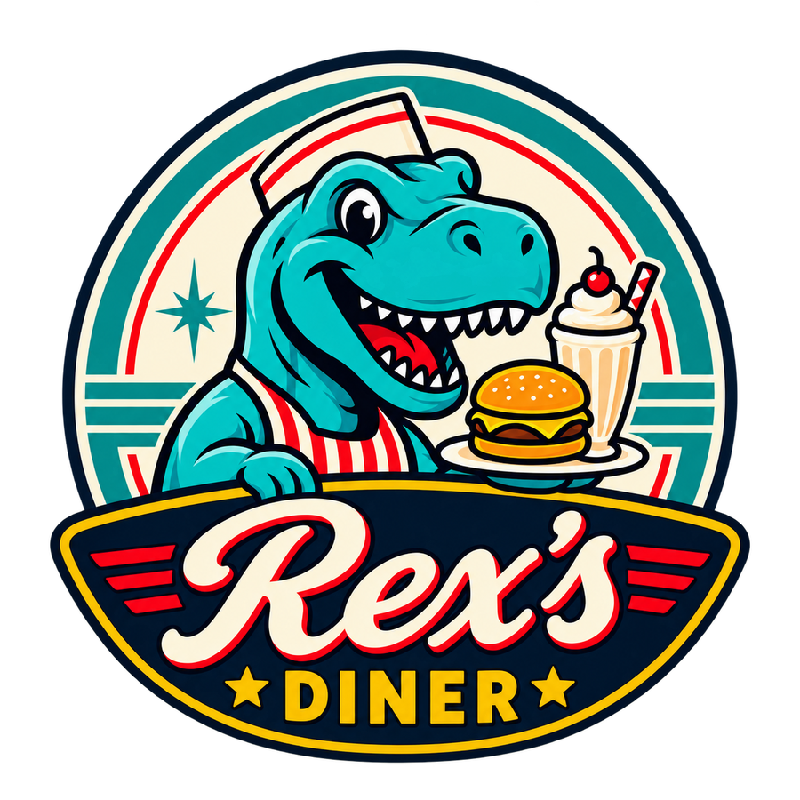

Rosabella Lane
OMANIKHoiab Rex’s Dineri igapäevasel toimimisel silma peal ning vastutab suuremate otsuste ja dineri üldise suuna eest.
MEIE LUGU
Uus nimi, tuttav hing ja natuke ajalugu igas ampsus.

REX’S TÄNA
Rex’s kannab endas vana dineri tunnet, kuid uus nimi, uus kodu ja dinosauruse maskott annavad sellele täiesti oma näo.
CASEY’ST REX’SINI
Enne Rex’s Dineriks saamist tunti meid linnas Casey’s Dinerina, mis asus Route 68 ääres suunakoodil 4023. Seal sai alguse suur osa loost, mis elab Rex’sis edasi tänaseni.
Uude koju kolides sai diner uue nime ja uue peatüki, kuid kõike vana ei olnud põhjust maha jätta. Seetõttu kannavad mõned road tänaseni Casey nime ning Casey Kodune Kombo on endiselt menüüs.
JUHTKOND
Rex’s Dineri juhtimine on jagatud nii, et igapäevased otsused, ootamatud olukorrad ja meeskonna toimimine ei jääks ühe inimese õlule.
Hoiab Rex’s Dineri igapäevasel toimimisel silma peal ning vastutab suuremate otsuste ja dineri üldise suuna eest.
Toetab juhtimist, aitab igapäevaste otsuste ja ootamatute olukordadega ning hoiab koos Rosabellaga Rex’si sujuvalt toimimas.
MIS MEID ISELOOMUSTAB?
Meile on oluline kodune toit, sõbralik teenindus, tuttav retrohõng ja see, et dineril oleks oma iseloom. Rex’s on uus peatükk, kuid Casey’si ajalugu jääb selle loo osaks.